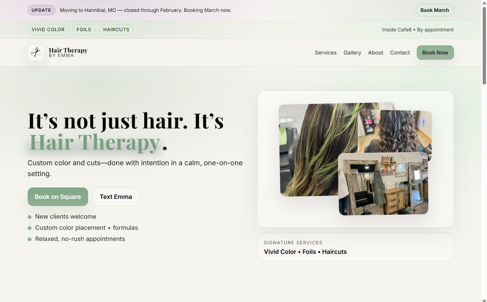
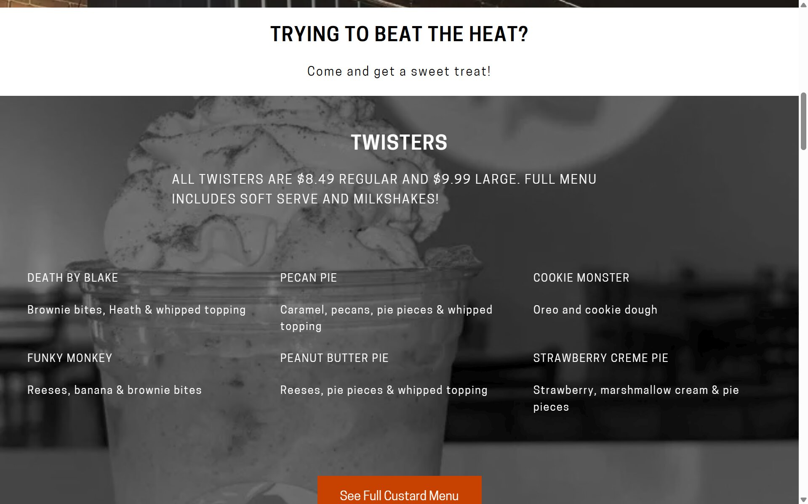

1
Outdated information
Old menus, old services, wrong hours, outdated photos, or pages that no longer match the business.
Built by Charlie Evans — a local website operator helping small businesses get straightforward website help without the bloated agency process.
Praxis helps small businesses fix, build, and maintain websites that explain the business clearly and make the next step easy.
Focused on the Quincy-area region, Northeast Missouri, and West-Central Illinois — while open to the right projects anywhere in the U.S.
A small business website does not need to be flashy. But it does need to answer the basic questions fast.
If visitors cannot quickly understand what you do, where you are, whether you are active, or how to reach you, they may leave before they ever call, book, or message.
Old menus, old services, wrong hours, outdated photos, or pages that no longer match the business.
Visitors cannot quickly understand what you do, where to go, or how to take the next step.
The site may look acceptable on desktop but feel clunky, cramped, or frustrating on a phone.
The business changes, but the website slowly falls behind because nobody wants to deal with it.
No clear photos, reviews, proof, service area, process, or reason for someone to feel confident reaching out.
Not every business needs a brand-new website. Some sites need cleanup. Some need a full rebuild. Some need someone reliable to keep things current after launch.
For businesses with an existing website that needs cleanup, updates, or clearer structure.
Useful for updating information, improving mobile clarity, cleaning up confusing sections, adding stronger calls to action, and fixing small trust gaps.
For businesses that need a new website or need to replace an outdated, confusing, or ineffective one.
The goal is a clean, useful site that explains the business clearly and makes it easier for customers to reach out.
For businesses that want reliable help keeping their website current after launch.
Useful for menu updates, photo swaps, service changes, announcements, small edits, basic maintenance, and light improvement check-ins over time.
A few real projects Praxis has helped with — from clean website builds to practical updates for local businesses.

Hair Therapy by Emma screenshot'}))">A clean website build for a local stylist, giving clients a simple place to understand services, location, and how to book.
View Project
Myrtle Mae’s screenshot'}))">Website update support for a local restaurant, including menu and content changes to help customers find current information.
View ProjectThe free website review gives you a practical outside look at your current site. No pressure. No bloated report. Just a clear look at what may be confusing visitors or making them less likely to reach out.
Share your current website and a little context about what feels outdated, confusing, or hard to manage.
I look at the site’s first impression, mobile experience, structure, content, trust signals, and calls to action.
I’ll tell you whether the site likely needs a tune-up, a rebuild, ongoing care, or a few smaller fixes.

I’m Charlie Evans, the operator behind Praxis Systems.
I help small businesses improve their websites without turning the project into a big, confusing agency process. The focus is simple: make the website easier to understand, easier to trust, and easier for customers to use.
Praxis is currently focused on businesses around Quincy, IL, Northeast Missouri, and West-Central Illinois, while staying open to the right projects anywhere in the United States.
Send it over. I’ll take a look and tell you what I’d fix first.